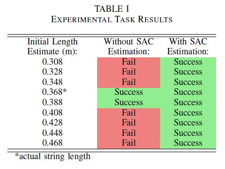

Project Overview
One fundamental goal of artificial learning for automation and production is providing the capability for a robot to automatically synthesize actions that improve estimates of the robot's internal dynamics and dynamic models of real-world objects. Human workers on production lines constantly use dynamic interactions with objects to improve their quality and speed in a manufacturing environment. This project aimed to provide this form of learning on robots using real-time processing of feedback from active exploration of the environment. To provide a realistic scope to the project, I focused on creating a method for real-time active synthesis of dynamic trajectories to estimate a single model parameter in a known dynamical model.
Optimization Algorithm
For the project, I attached a mass suspended from a string to the manipulator of Baxter and assumed that the model was known except for the length of the string which is uncertain. The only source of feedback is a load cell that I mounted at the gripper to provide measurement of the string tension over time. There are two stages to the control problem: First, the unknown parameter must be estimated in the system. After estimation, the second stage is the synthesis of the task trajectory.
In order to generate an optimal trajectory for estimation, a cost function involving a metric on Fisher Information is used. For the project, I assumed that one parameter, $\theta$, is uncertain with additive noise on observer measurements but negligible process noise. The system model is given by the following where $\tilde{y}$ is the observed output, $x$ is the state, and $\mathrm{w}_y$ is the measurement noise.
$$\dot{x} =f(x,u,\theta) = g(x, \theta) + h(x, \theta) u$$ $$\tilde{y}=y(x,u,\theta)+\mathrm{w}_y$$
The equation for Fisher Information can be reduced using these assumptions to the following form $$I(\theta)=\sum_{k=k_0}^{k_f}\Gamma_\theta(t_k)^T\cdot \Sigma^{-1}\cdot \Gamma_\theta(t_k)$$ where $\Gamma_\theta$ is the derivative of the output $y$ w.r.t. the parameter $\theta$ given by $$\Gamma_\theta(t_i)=D_xy(x(t_i),u(t_i),\theta) \cdot D_\theta x(x(t_i),u(t_i),\theta)+D_\theta y(x(t_i),u(t_i),\theta).$$
Full details of the algorithm can be found in the publication page.
Project Results
9 trials of the task were run using different initial estimates of the string length without optimizing the estimates. The results are shown in the center column of the table. The task is completed with only two estimates of the length - the actual value of 0.368m and a slightly longer length of 0.388m. The second set of 9 trials is run using the optimization procedure to refine the initial estimates. The mean estimate of $\ell$ from the 9 trials after 6 seconds was 0.367m with the actual string length set to 0.368m. The standard deviation of the final estimates is 0.0042m. In all 9 trials, the task of swinging the ball into the box is completed successfully.
A video showing one full trial is available below: